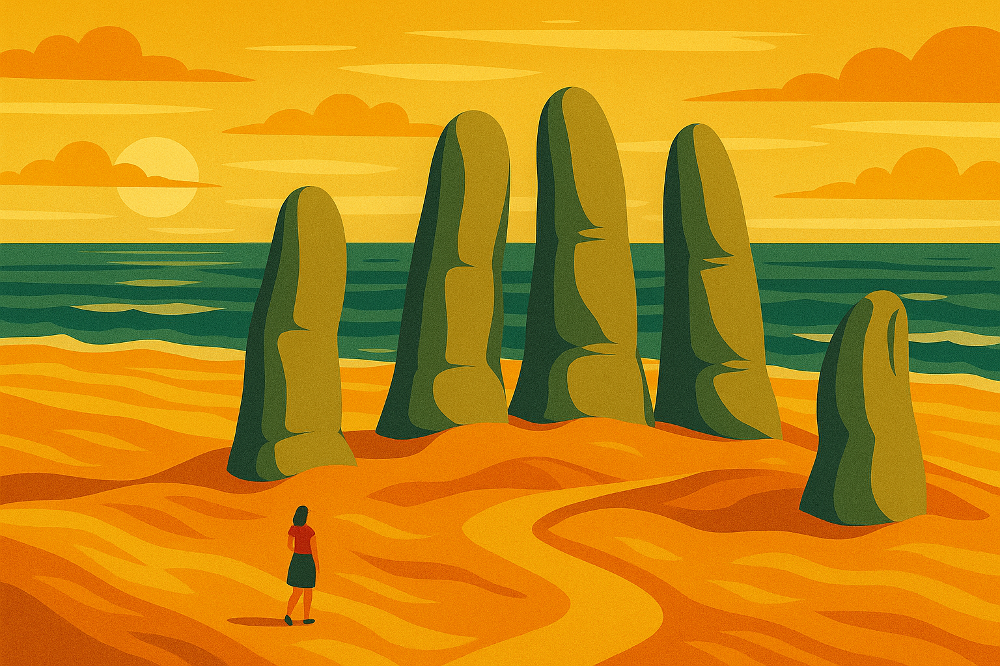
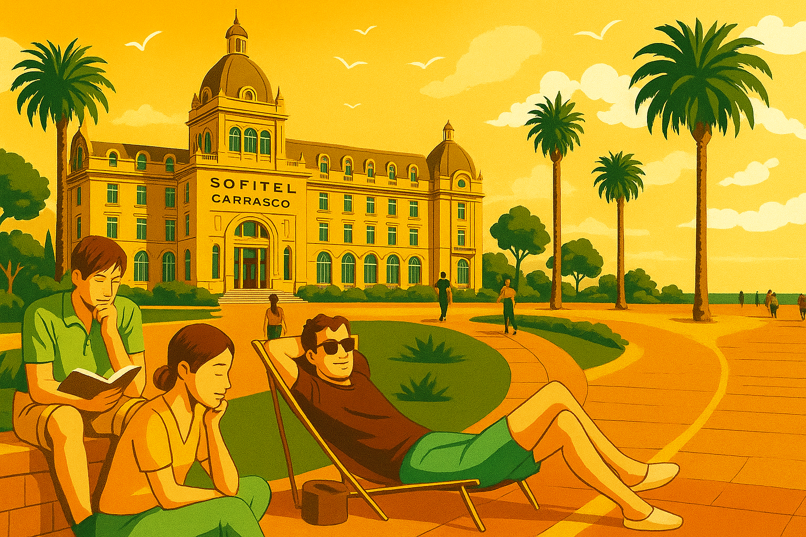
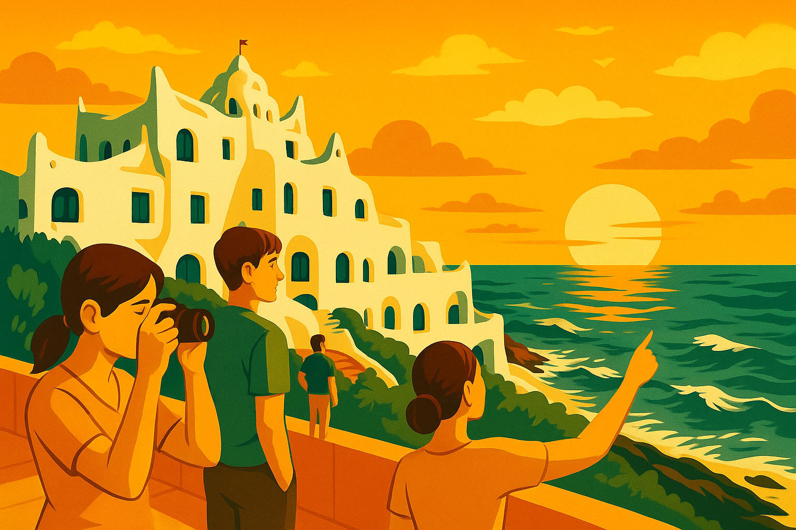

Discover the Best of Uruguay's Tourism
Top Destinations
How do I explore the Rambla?
The Rambla is best explored on foot or by bicycle. There are several rental shops along the way.
You can use the STM app for public transport information.
Where are the Fingers of Punta del Este?
The Fingers are located at Brava Beach, just a short walk from the main avenue.
They are a famous landmark and a must-see for visitors.
What does the Sofitel offer?
The Sofitel offers luxury accommodations, a spa, and fine dining options.
Book your stay at the Sofitel for an unforgettable experience.
How to get to the Templo Sengue Dzong?
The Templo Sengue Dzong is located in the hills, and it's best reached by car or guided tour.
You can find more information on their official website.
What to see in Casa Pueblo?
Casa Pueblo is an art gallery and hotel, showcasing the works of artist Carlos Páez Vilaró.
You can check their official website for more information.
What is the history of the Palacio Legislativo?
The Palacio Legislativo is the seat of the Uruguayan Parliament and is known for its stunning architecture and rich history.
Guided tours are available, and you can learn more about its history on the official website.